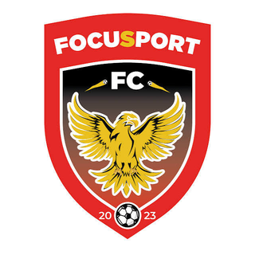
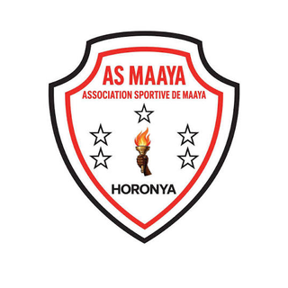
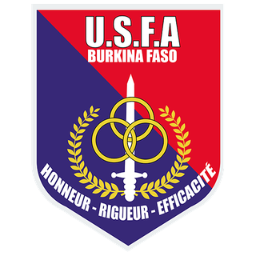
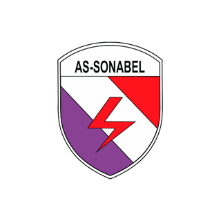
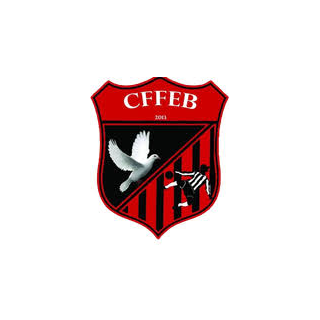
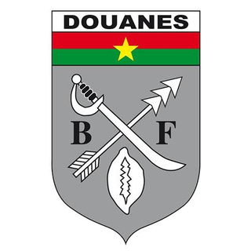

FocuSport FC · Faso Foot Ligue 1 · 2026/27SouleymaneOUÉDRAOGO
Le joueur en un coup d'œil
Souleymane Ouédraogo évolue à FocuSport FC : 5 match(s), 439 minute(s), 0 but(s) et 0 passe(s) décisive(s) cette saison en Faso Foot Ligue 1.
Positionnement parmi les défenseurs de la ligue
Comparaison avec 68 joueurs du même poste (≥ 3 matchs, ≥ 180 min). 100 = meilleur de la ligue.
Pourquoi le recruter ?
Synthèse méthodique pour dirigeants et recruteurs : chaque constat s'appuie sur les données réelles du championnat.
Le test du recruteur : 5 questions
Une méthode simple pour décider : chaque question reçoit un feu vert, orange ou rouge, calculé sur les chiffres réels.
💡 Conseil du recruteur : un bon dossier = il joue + il fait gagner des points + il est discipliné + on l'a vu jouer.
Points forts
- 🛡️ 5 titularisation(s) sur 5 match(s) : la confiance de son entraîneur.
- ⏱️ 439 minutes jouées : un échantillon suffisant pour juger son niveau.
- 😇 Aucun carton en 5 match(s) : engagement sans excès.
Ce qu'il apporte à votre équipe
- 🛡️ Protège le but : neutralise les attaquants avant la frappe.
- ✅ Titulaire crédible dès maintenant.
Points de vigilance
- ℹ️ Taille : non communiqué, à demander au club.
- ℹ️ Pied fort : non communiqué, à demander au club.
- 🎬 Pas encore analysé en vidéo : visionner un match complet avant de décider.
- 🥅 Ni but ni passe décisive à ce stade.
Poste idéal et système où il brille
Lecture tactique calculée à partir des données du joueur (gabarit, buts, passes, zones occupées, vitesse, passes réussies) : le rôle le plus cohérent avec son profil, et les schémas qui le servent le mieux.
Défenseur central relanceur
S'épanouit en 3-5-2 (relanceur dans une défense à trois) et en 4-3-3 (équipe qui construit depuis l'arrière).
Ce qui l'indique
- Peu de données mesurées : le classement repose surtout sur le poste déclaré.
Autres rôles envisageables
Où il joue : son plateau tactique en 3D
Le joueur (pion doré) à son poste idéal « Défenseur central relanceur », dans les systèmes qui le servent le mieux. Choisissez un système, faites pivoter le terrain, zoomez à la molette.
Les clubs du championnat qui ont le plus besoin de lui
Classement par ordre de besoin pour le profil « Défenseur central relanceur » : lacunes du poste (attaque, défense, création, profondeur d'effectif, âge) et absence de ce profil dans l'effectif.
- Défense n°10 sur 16 (1.29 but(s) encaissé(s) par match)
- Titulaires du poste vieillissants (âge moyen 33.0 ans)
- Aucun profil « Défenseur central relanceur » dans l'effectif

- Défense n°12 sur 16 (1.43 but(s) encaissé(s) par match)
- Titulaires du poste vieillissants (âge moyen 32.0 ans)
- Aucun profil « Défenseur central relanceur » dans l'effectif

- Défense n°1 sur 16 (0.29 but(s) encaissé(s) par match)
- Aucun profil « Défenseur central relanceur » dans l'effectif

- Défense n°8 sur 16 (1.0 but(s) encaissé(s) par match)
- Aucun profil « Défenseur central relanceur » dans l'effectif

- Défense n°3 sur 16 (0.57 but(s) encaissé(s) par match)
Méthode : besoin = 55 % lacune du poste (buts marqués/encaissés, passes décisives, dépendance à un buteur, âge, profondeur) + 45 % absence du rôle dans l'effectif. Indicatif : ne remplace pas l'avis du staff.
Clubs étrangers dont l'effectif a besoin de son poste
Parmi 23 championnats (Europe et USA), clubs accessibles classés par besoin au poste « Défenseur » : blessés, effectif étroit, prêts, résultats.
- Effectif étroit : 3 joueur(s) disponible(s) au poste (minimum conseillé 4)
- Âge moyen des titulaires à ce poste : 25.3 ans (le sien : 23 ans)
- Style de jeu du club en adéquation avec son rôle
- Défense n°2 sur 12 du championnat (0.92 but(s) encaissé(s) par match)
- 1 blessé(s) à ce poste dont 1 de longue durée : Krystof Karban
- Effectif étroit : 3 joueur(s) disponible(s) au poste (minimum conseillé 4)
- Âge moyen des titulaires à ce poste : 25.0 ans (le sien : 23 ans)
- Style de jeu du club en adéquation avec son rôle
- 2 blessé(s) à ce poste dont 1 de longue durée : Alessandro Buongiorno, Benoît Badiashile
- 2 joueur(s) à ce poste en fin de contrat d'ici juin 2027 : le club devra les remplacer
- 1 joueur(s) du poste prêté(s) à l'extérieur
- Âge moyen des titulaires à ce poste : 26.0 ans (le sien : 23 ans)
- 3 blessé(s) à ce poste dont 2 de longue durée : Leo Hjelde, Tommy St. Jago, Ian Struyf
- 1 joueur(s) à ce poste en fin de contrat d'ici juin 2027 : le club devra les remplacer
- 1 joueur(s) du poste prêté(s) à l'extérieur
- Âge moyen des titulaires à ce poste : 25.3 ans (le sien : 23 ans)
- 3 blessé(s) à ce poste dont 3 de longue durée : Thomas Beelen, Jeremiah St. Juste, Tijme Wessels
- Effectif étroit : 3 joueur(s) disponible(s) au poste (minimum conseillé 4)
- 1 joueur(s) à ce poste en fin de contrat d'ici juin 2027 : le club devra les remplacer
- Âge moyen des titulaires à ce poste : 24.3 ans (le sien : 23 ans)
- 2 joueur(s) à ce poste en fin de contrat d'ici juin 2027 : le club devra les remplacer
- Âge moyen des titulaires à ce poste : 24.3 ans (le sien : 23 ans)
- Style de jeu du club en adéquation avec son rôle
- Défense n°6 sur 14 du championnat (1.33 but(s) encaissé(s) par match)
Méthode : 20 % besoin du club à ce poste (résultats, blessés, effectif étroit) + 20 % besoin précis pour son profil (blessés, prêts, fins de contrat au poste exact) + 18 % gabarit (taille moyenne des titulaires du club à ce poste) + 14 % style de jeu du club (déduit de ses résultats) + 12 % âge moyen au poste + 16 % niveau du club / niveau estimé du joueur. Mineurs : bonus aux clubs à filière jeunes. Aucun plafond de valeur ; un club n'est proposé qu'à un nombre limité de joueurs par poste. Données publiques collectées le 2026-11-06
Les 4 graphiques du joueur
Quatre lectures du joueur, toujours calculées sur ses données réelles (aucun graphique illustratif).
Positionnement par poste (radar)
Centiles parmi les joueurs du même poste (100 = meilleur de la ligue). Gris : échantillon réduit, comparaison indicative.
Zone de poste
Zone du poste déclaré sur la feuille de match : un schéma, pas une mesure (aucune analyse vidéo pour ce joueur).
Comparaison à la moyenne du poste
Le joueur face à la moyenne des joueurs du même poste ayant au moins 3 matchs et 180 minutes.
Parcours de la saison
Présence (titulaire / entré en jeu / banc), buts, passes décisives, cartons et résultat de chaque journée.
Analyse scouting personnalisée
Rédigée à partir des données réelles du joueur : feuilles de match, comparaison avec les joueurs du même poste et analyse vidéo quand elle existe. Aucune appréciation n'est inventée.
Profil et utilisation
- Souleymane Ouédraogo : Défenseur à FocuSport FC, 23 ans, n°17.
- Utilisation : titulaire régulier (5 titularisation(s) sur 5 match(s), 439 minutes, soit 88 minutes par match).
Rendement
- Rendement : 0 but(s) et 0 passe(s) décisive(s) en 5 match(s), soit 0.00 implication(s) dans les buts par 90 minutes.
- Parmi les défenseurs de la ligue ayant au moins 3 matchs et 180 minutes, l'implication dans les buts se situe au 39ᵉ centile (100 = meilleur).
- Forme récente : 0 but(s) et 0 passe(s) décisive(s) sur les 3 dernier(s) match(s) joué(s).
- Aucune contribution directe (but ou passe décisive) enregistrée : le rôle se lit surtout par le placement et la vidéo.
Discipline
- Discipline : aucun carton en 5 match(s) (439 minutes).
- Niveau de discipline : 78ᵉ centile parmi les défenseurs de la ligue (100 = le plus discipliné).
Lecture vidéo
- Pas encore de match analysé en vidéo pour ce joueur : l'analyse repose sur les feuilles de match.
Points forts factuels
- Statut de titulaire régulier.
- Discipline irréprochable sur la période.
À confirmer
- Taille : non renseigné, à vérifier directement avec le club ou le joueur.
- Pied fort : non renseigné, à vérifier directement avec le club ou le joueur.
- Aucune analyse vidéo disponible : visionner les matchs complets ou demander une analyse à RSM Agency.
- Les minutes exactes des titulaires remplacés ne sont pas publiées : le temps de jeu par match est approximatif.
Recommandation de suivi
- Pour un contact ou une demande d'information : écrire à RSM Agency par WhatsApp.
Rendement sur la saison
Titulaire dans 5 des 5 match(s) observés sur les feuilles de match.
Journal des matchs 2026/27
Rôle, minutes, buts, passes et cartons match par match, avec les liens vers le Match Tracker et le match complet quand l'un des clubs suivis par RSM Agency est concerné.
| J | Date | Adversaire | Score | Rôle | Min | B | PD | Cartons | Liens |
|---|---|---|---|---|---|---|---|---|---|
| J5 | AS Maya | V 1–2 | Titulaire | — | Fiche du match | ||||
| J4 |  Rahimo FC Rahimo FC | D 1–4 | Titulaire | — | Fiche du match | ||||
| J3 |  Sporting Cascades Sporting Cascades | V 2–3 | Titulaire | — | Fiche du match | ||||
| J2 | AS SONABEL | V 3–2 | Titulaire | — | Fiche du match | ||||
| J1 |  AS Douanes | V 1–0 | Titulaire | — | Fiche du match |
Vidéos, highlights et matchs complets
Liens YouTube trouvés par recherche (titre et chaîne affichés ; aucune vidéo n'est copiée) et matchs complets de RSM Agency.
Ses matchs : résumés et matchs complets
| J4 | Rahimo FC | Résumé YouTube |
Parcours et statistiques de carrière
Parcours
Sélections et compétitions internationales
Aucune sélection ni compétition internationale connue.
Statistiques par compétition (championnat et coupes)
| Saison | Compétition | Équipe | M | B | PD | Min | CJ |
|---|---|---|---|---|---|---|---|
| 2026/2027 | FasoFoot Ligue 1 | FOC | 5 | 0 | 0 | 439 | 0 |
| 2025/2026 | FasoFoot Ligue 1 | RCB | 25 | 0 | 0 | 2201 | 4 |
| 2025 | Coupe du Faso | SFC | 3 | 1 | 0 | 91 | 0 |
| 2024/2025 | FasoFoot Ligue 1 | SFC | 19 | 0 | 0 | 1481 | 3 |
| 2023/2024 | Ligue 1 Lonab | SFC | 12 | 0 | 1 | 434 | 2 |
| 2022 | Coupe du Faso | VIT | 0 | 0 | 0 | 0 | 0 |
| 2021/2022 | Ligue 1 Lonab | VIT | 22 | 3 | 0 | 873 | 2 |
| 2020/2021 | Championnat National Première Division | VIT | 15 | 0 | 0 | 577 | 0 |
Profil export : âge, visa et permis de travail
Les clubs européens suivent volontiers les joueurs de 16 à 19 ans qui progressent vite. Ce qui compte pour eux : l'âge, le droit de signer, la nationalité et l'expérience internationale.
À 23 ans, l'intérêt dépend désormais surtout de la régularité, des statistiques et de l'expérience internationale.
Un joueur burkinabè majeur a besoin d'un visa et d'un permis de travail, délivrés selon les règles propres à chaque pays (le club sponsor la demande). Le Royaume-Uni applique un système à points (GBE) où les sélections internationales comptent.
Aucune sélection nationale n'est recensée : une convocation ou un tournoi de jeunes renforcerait le dossier.
Une double nationalité ou une ascendance européenne lèverait la contrainte de permis de travail : à vérifier avec le joueur et sa famille.
Indications générales à valider auprès de la fédération, d'un avocat du sport ou du club preneur : les règles changent selon le pays et la saison.
Identité et contexte
| Club | FocuSport FC |
| Poste | Défenseur |
| Numéro | 17 |
| Âge | 23 |
| Naissance | — |
| Nationalité | Burkina Faso |
| Taille | — |
| Pied fort | — |
Sources : feuilles de match de la Faso Foot Ligue 1, profils de carrière, analyse vidéo RSM Agency (valeurs approchées). Les champs « — » ne sont pas renseignés : aucune valeur n'est inventée.